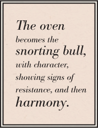
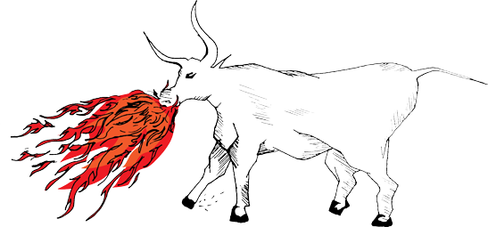
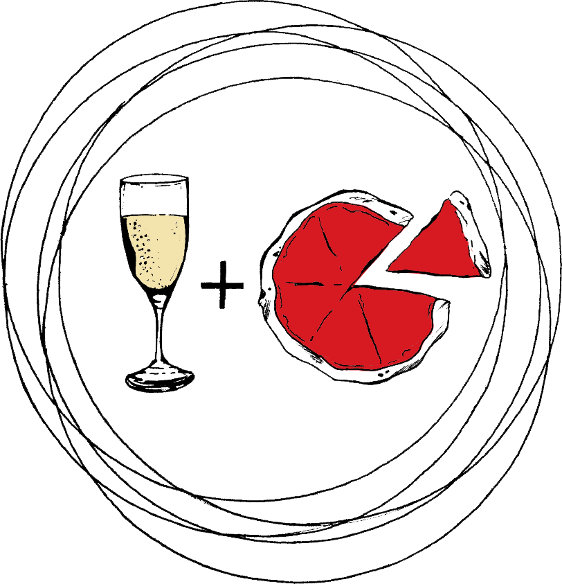
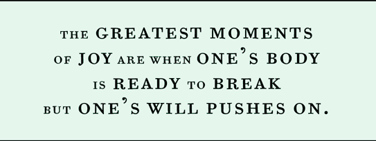

The more you obey the more you will be master. Bound to the essence of the object is a dependence on the artisan. The beast does not breathe until it is  worked upon. The oven remains an inanimate object, like a stone, until the worker returns and is able to give to the object, energy and essence. The oven becomes the snorting bull, with character, showing signs of resistance, and then harmony. It is the decision to return to the fire in the moment of recognizing one’s own freedom that makes man more powerful than the flame. To return to the oven is an expression of love, even if at times it is in pain. To return to the oven is an expression of freedom. We engage with our freedom by making the choice to be present before the object. To engage with the potentials and possibilities of the oven is to engage our infinite freedom in finitude. To become artisan is to become abstract, release the ego, become invisible, to become what is produced by the craft.
The labor we’re talking about is intensely physical, the dry heat from the window relentless, the consuming of wood never ending, and bending to see the fire, bowing before it, giving yourself over to the glow. This is spiritual, even if it is repressed. Why does one continue to return to his labor? There’s more than financial necessity. We wake so that we may work. To work upon fire is to engage with an activity that reaches back to our human origins. Both to cook, and to cook by fire. This is primitive, humans have been doing this for way longer than they’ve been able to reflect on it, or engage in some sort of discussion about essence. Fire is simple, our usage of it simple. What need for reflection?
This type of labor seems somehow essential in our effort to understand ourselves stripped of all else. To have food, and drink, is all there is. For the rest we should find ways to enjoy our toils. Engage with an action that is stripped of multiplicities and interpretations, fragmented by politics and power structures. To engage with labor is to accept the return, to will the return, to once again turn toward the flame and work. To return is to greet the eagle as Prometheus, and embrace your decision to be willing to suffer in order to give.
The greatest moments of joy are when one’s body is ready to break but one’s will pushes on. In these moments of physical transcendence there is joy. Labor is the striving for what is beyond the physical, it is to engage with limits, both one’s own, and the limits of the object one works upon. The push through, allow one’s self to be stripped of strength, to conjure the beast, and balance the essence of the object, is to discover a certain joy – rare, and worked for.
